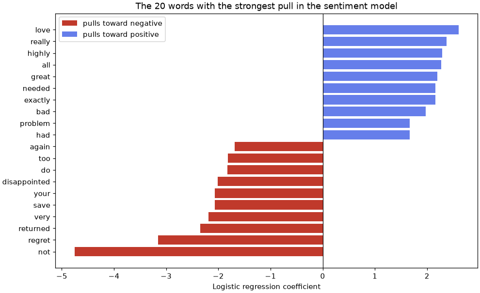

💬 Lesson 11.1: Text Classification
Teach a model to read 4,000 Pinecrest product reviews: turn free text into numbers, train a sentiment classifier that beats the baseline by a wide margin, and learn why throwing away the word "not" quietly breaks it.
🎯 Learning Objectives
By the end of this lesson, you will be able to:
- Clean and tokenize text with Python's
remodule, and explain what scikit-learn's vectorizers do to a sentence - Build bag-of-words and TF-IDF feature matrices, and read the sparse matrix and vocabulary they produce
- Train a leak-free sentiment classifier with a
PipelineofTfidfVectorizerandLogisticRegression, and compare it with a baseline - Explain the stop-word trap, and use bigrams so that "not waterproof" and "not bad" become features of their own
- Describe what word embeddings add over TF-IDF, and when the simpler model is the right choice
In This Lesson
🧭 Words Are Not Numbers (Yet)
Pinecrest Outfitters collects a few hundred product reviews every month. Somewhere in that stream are customers whose tent leaked on the first night or whose boots fell apart, and the care team wants to reach them quickly. Nobody has time to read every review. A model that reads them first and raises a flag on the unhappy ones would let the team spend its time on replies instead of searching.
Every model you have trained so far does arithmetic on columns of numbers. A review is a string of words of any length. The whole craft of classic text classification is one step: turn each document into a fixed-length row of numbers that keeps enough of the meaning. Once you have that, the rest is the scikit-learn workflow you already know.
💡 Mental Model: The Tally Sheet
Imagine handing each review to a clerk with a long tally sheet that lists every word Pinecrest's customers have ever used. The clerk reads the review and makes one tick next to each word every time it appears. The clerk does not care about grammar or word order, only about which words show up and how often. That tally sheet is a bag of words: the review has been poured into a bag and shaken, and only the word counts survive.
It sounds too crude to work, yet a tally of "love", "leaked", "returned" and "highly recommend" says a lot about how a customer feels. Where it fails is just as instructive: "not bad" and "bad" leave almost the same ticks. By the end of the lesson you will know how to keep the "not".
🤔 Why This Matters
Text is everywhere in a business: reviews, support tickets, chat logs, survey comments, product descriptions. Large language models get the headlines, but a TF-IDF model with logistic regression trains in under a second, explains itself word by word and is often within a few points of far bigger models on short, focused text. It is the baseline every text project should start with, and for many it is the model that ships.
📂 The Review Data and a Baseline
Load the reviews and look at the star ratings.
import pandas as pd
import sklearn
print(sklearn.__version__)
reviews = pd.read_csv("data/reviews.csv")
print(reviews.shape)
print(reviews["rating"].value_counts().sort_index())Output
1.9.1
(4000, 8)
rating
1 230
2 558
3 905
4 1093
5 1214
Name: count, dtype: int64Each row is one review with a date, a product, a 1-to-5 star rating, a short title and the text. Read a few before modeling anything: there is no better way to learn what the model will be up against.
for _, row in reviews.sample(4, random_state=42).iterrows():
print(row["rating"], "|", row["text"])Output
3 | really happy with this. it the zipper failed after a week. it arrived quickly. however it is not waterproof at all.
5 | Love it. This is my second one. It arrived quickly. It still looks new after a season of use.
5 | Exactly what I needed. This trekking poles is easy to set up.
5 | Highly recommend. It shipped fast and well packed. It is lighter than my old one. It is fairly priced for the quality.Already you can see the challenges. The first review is all lowercase, has a slip ("it the zipper") and opens with "really happy with this" before complaining about a broken zipper and rain getting in: a 3-star review in every sense. Others have small grammar slips ("This trekking poles is"). Real reviews look like this, and so do these.
Framing the Task
Turn the stars into a yes-or-no target: 4 or 5 stars is positive, 1 or 2 is negative. Three-star reviews are genuinely mixed, so leave them out of training (the project comes back to them). Then split, stratified, exactly as in every classification lesson so far, and measure the do-nothing baseline.
from sklearn.model_selection import train_test_split
from sklearn.dummy import DummyClassifier
labeled = reviews[reviews["rating"] != 3].copy()
labeled["positive"] = (labeled["rating"] >= 4).astype(int)
print(len(labeled), f"reviews, positive share {labeled['positive'].mean():.3f}")
X_train, X_test, y_train, y_test = train_test_split(
labeled["text"], labeled["positive"], test_size=0.25, stratify=labeled["positive"], random_state=42
)
print(X_train.shape, X_test.shape)
baseline = DummyClassifier(strategy="most_frequent").fit(X_train, y_train)
print(f"baseline accuracy: {baseline.score(X_test, y_test):.3f}")Output
3095 reviews, positive share 0.745
(2321,) (774,)
baseline accuracy: 0.745Notice that X_train is a Series of strings, one review per row, not a table of columns. Text vectorizers expect exactly that: an iterable of documents. Saying "positive" for everything is right 74.5% of the time; that is the number to beat.
🧹 Cleaning and Tokenizing
Tokenizing means cutting text into units, called tokens, that you will count: usually words. Cleaning means making the same word look the same every time, so that "Waterproof", "waterproof" and "waterproof!" end up on one line of the tally sheet. Python's built-in re module (regular expressions) is all you need for both.
import re
sample = "Really happy with this!! It is NOT waterproof at all... 2-person tent, 10/10."
lowered = sample.lower()
print(lowered)
print(re.findall(r"[a-z]+", lowered))Output
really happy with this!! it is not waterproof at all... 2-person tent, 10/10.
['really', 'happy', 'with', 'this', 'it', 'is', 'not', 'waterproof', 'at', 'all', 'person', 'tent']The pattern [a-z]+ means "one or more letters in a row", so re.findall returns every run of letters and skips punctuation and digits. Wrapped in a function, that is a complete cleaner:
def clean(text):
text = text.lower()
text = re.sub(r"[^a-z\s]", " ", text) # anything that is not a letter or whitespace becomes a space
return re.sub(r"\s+", " ", text).strip() # squeeze runs of spaces into one
print(clean(sample))
print(clean("Waterproof! WATERPROOF... waterproof"))Output
really happy with this it is not waterproof at all person tent
waterproof waterproof waterproofEvery choice in a cleaner throws something away. Dropping digits loses "10/10", which is a strong positive signal; dropping "!!" loses enthusiasm. There is no universally right cleaner, only one that fits your task, and you should test it the same way you test any other preprocessing step: by its effect on a validation score.
What scikit-learn Does for You
You rarely need to call a cleaner yourself. scikit-learn's text vectorizers lowercase and tokenize on their own. You can ask a vectorizer to show you exactly what it does to a sentence with build_analyzer():
from sklearn.feature_extraction.text import CountVectorizer
analyzer = CountVectorizer().build_analyzer()
print(analyzer(sample))
print(analyzer("I think a tent is a tent"))Output
['really', 'happy', 'with', 'this', 'it', 'is', 'not', 'waterproof', 'at', 'all', 'person', 'tent', '10', '10']
['think', 'tent', 'is', 'tent']The default token pattern, r"(?u)\b\w\w+\b", keeps runs of two or more word characters. So it keeps digits ("10") and the parts of "2-person" ("person"), but silently drops one-letter words like "I" and "a". For sentiment that is harmless. If single letters matter in your text (sizes like "M" and "L", for example), pass your own token_pattern, or your own function as preprocessor= or tokenizer=.
Typos, Stems and Lemmas
Customers misspell things. Count a few common typos in the reviews:
for typo, right in [("waterprof", "waterproof"), ("reccomend", "recommend"), ("qaulity", "quality")]:
n_typo = reviews["text"].str.contains(typo).sum()
n_right = reviews["text"].str.contains(right).sum()
print(f"{typo:10s} {n_typo:3d} {right:10s} {n_right:4d}")Output
waterprof 9 waterproof 203
reccomend 11 recommend 217
qaulity 15 quality 389To a bag of words, "qaulity" and "quality" are unrelated tokens. With a few typos among hundreds of correct spellings, that costs little. Exercise 3 shows a neat fix: count character sequences instead of words, so a typo still shares most of its pieces with the correct spelling.
💡 Stemming and Lemmatization, Honestly
Many tutorials reduce words to a root: stemming chops endings by rule ("leaked", "leaking" become "leak"), and lemmatization looks words up in a dictionary ("was" becomes "be"). Both need a language library such as NLTK or spaCy, which this course does not install. For sentiment classification with TF-IDF they usually change accuracy by a point or less, because the model learns "leaked" and "leaking" separately anyway. They matter more for search and for very small datasets. If you ever need them, add the library and pass its function as the vectorizer's tokenizer=, then check that the validation score really improves.
🎒 Bag of Words
CountVectorizer is the clerk with the tally sheet. fit learns the vocabulary (every token it saw, one column each); transform fills in the counts. Try it on three tiny "reviews" so you can see every number:
toy = ["The tent is warm", "The tent is not warm", "Not bad, warm and light"]
counter = CountVectorizer()
counts = counter.fit_transform(toy)
print(counter.get_feature_names_out())
print(pd.DataFrame(counts.toarray(), columns=counter.get_feature_names_out()))Output
['and' 'bad' 'is' 'light' 'not' 'tent' 'the' 'warm']
and bad is light not tent the warm
0 0 0 1 0 0 1 1 1
1 0 0 1 0 1 1 1 1
2 1 1 0 1 1 0 0 1Each document is now a row of eight numbers, one per vocabulary word, sorted alphabetically. Look at the first two rows: "The tent is warm" and "The tent is not warm" differ by a single 1 in the not column. The meaning flipped; the numbers barely moved. Keep that in mind.
Sparse Matrices
Now fit the vectorizer on the real training reviews. Fit on X_train only: the vocabulary is learned from data, just like a scaler's mean, so it must not see the test set.
bow = CountVectorizer().fit(X_train)
X_train_counts = bow.transform(X_train)
n_rows, n_cols = X_train_counts.shape
print(type(X_train_counts).__name__, X_train_counts.shape)
print(f"stored values: {X_train_counts.nnz:,} of {n_rows * n_cols:,} cells ({X_train_counts.nnz / (n_rows * n_cols):.1%})")Output
csr_matrix (2321, 333)
stored values: 40,981 of 772,893 cells (5.3%)The vocabulary has 333 words (these reviews use a small, repetitive vocabulary; real reviews often reach tens of thousands). Each review uses only a handful of them, so almost every cell is zero. scikit-learn returns a sparse matrix (here a SciPy csr_matrix) that stores only the non-zero values and their positions. With 50,000 documents and 100,000 words a dense table would need 40 GB; the sparse one fits in a few megabytes. Linear models and Naive Bayes work on sparse input directly. Avoid .toarray() on anything bigger than a toy.
⚖️ TF-IDF: Weighting Words
Raw counts treat every word as equally informative. But "the" and "it" appear in almost every review and say nothing about sentiment, while "leaked" appears in a few and says a lot. TF-IDF (term frequency times inverse document frequency) fixes this by giving each word a weight:
- Term frequency (TF): how often the word appears in this document (the count).
- Inverse document frequency (IDF): how rare the word is across all training documents. Common words get a small IDF, rare words a large one.
scikit-learn's default IDF for a word that appears in df of n documents is
idf = ln((1 + n) / (1 + df)) + 1
Each document's row of TF times IDF values is then scaled to length 1 (L2 normalization), so a long review and a short one are compared on the mix of words they use, not on how much they wrote.
import numpy as np
from sklearn.feature_extraction.text import TfidfVectorizer
tfidf_toy = TfidfVectorizer()
weights = tfidf_toy.fit_transform(toy)
vocab = tfidf_toy.get_feature_names_out()
print(pd.Series(tfidf_toy.idf_, index=vocab).round(3))
print(pd.DataFrame(weights.toarray(), columns=vocab).round(2))
print("idf of 'tent' by hand:", round(np.log((1 + 3) / (1 + 2)) + 1, 3))Output
and 1.693
bad 1.693
is 1.288
light 1.693
not 1.288
tent 1.288
the 1.288
warm 1.000
dtype: float64
and bad is light not tent the warm
0 0.0 0.0 0.53 0.0 0.00 0.53 0.53 0.41
1 0.0 0.0 0.47 0.0 0.47 0.47 0.47 0.36
2 0.5 0.5 0.00 0.5 0.38 0.00 0.00 0.30
idf of 'tent' by hand: 1.288"warm" is in all three documents, so it gets the smallest IDF (exactly 1). "tent", "is", "the" and "not" appear in two, and "and", "bad" and "light" in only one, so they weigh the most. In the third document, "warm" ends up with the smallest weight even though it appears once like every other word: it is the least distinctive. The hand calculation for "tent" (2 of 3 documents) matches the vectorizer's 1.288.
✅ TF-IDF Is a Transformer Like Any Other
fit learns the vocabulary and one IDF per word from the training documents; transform applies them to any document. It slots into a Pipeline exactly like StandardScaler did in Lesson 2.2, and the same rule applies: fit on training data only.
🚀 A Sentiment Classifier
Here is the whole model: a vectorizer that turns text into a sparse TF-IDF matrix, followed by logistic regression, which gives every word a weight. Wrapping both in a pipeline means the vocabulary and the IDF values are learned inside fit, from the training reviews only, and cross-validation later cannot leak.
from sklearn.pipeline import make_pipeline
from sklearn.linear_model import LogisticRegression
from sklearn.metrics import accuracy_score, classification_report
sentiment = make_pipeline(TfidfVectorizer(), LogisticRegression())
sentiment.fit(X_train, y_train)
pred = sentiment.predict(X_test)
print(f"TF-IDF + logistic regression accuracy: {accuracy_score(y_test, pred):.3f}")
print(classification_report(y_test, pred, target_names=["negative", "positive"], digits=3))Output
TF-IDF + logistic regression accuracy: 0.877
precision recall f1-score support
negative 0.823 0.660 0.732 197
positive 0.891 0.951 0.920 577
accuracy 0.877 774
macro avg 0.857 0.806 0.826 774
weighted avg 0.874 0.877 0.873 7740.877 against the baseline's 0.745, with a model that trained in a fraction of a second. For the care team, the negative row is the one to read: its recall says what share of the unhappy customers the model catches, and its precision says how many of the flagged reviews really are unhappy. Catching about two-thirds of negative reviews is a start; the project tunes the threshold to catch more.
👀 What Did It Learn?
Every column of the TF-IDF matrix is a word, so every coefficient of the logistic regression belongs to a word. That makes this model unusually easy to inspect.
import matplotlib.pyplot as plt
vectorizer = sentiment.named_steps["tfidfvectorizer"]
classifier = sentiment.named_steps["logisticregression"]
word_weights = pd.Series(classifier.coef_[0], index=vectorizer.get_feature_names_out()).sort_values()
top = pd.concat([word_weights.head(10), word_weights.tail(10)])
print(top.round(2))
fig, ax = plt.subplots(figsize=(9, 5.5), layout="constrained")
negative, positive = top[top < 0], top[top > 0]
ax.barh(negative.index, negative.to_numpy(), color="#c0392b", label="pulls toward negative")
ax.barh(positive.index, positive.to_numpy(), color="#667eea", label="pulls toward positive")
ax.axvline(0, color="black", linewidth=0.8)
ax.set_xlabel("Logistic regression coefficient")
ax.set_title("The 20 words with the strongest pull in the sentiment model")
ax.legend(loc="upper left")
plt.show()Output
not -4.75
regret -3.16
returned -2.35
very -2.19
save -2.07
your -2.07
disappointed -2.01
do -1.83
too -1.81
again -1.69
had 1.66
problem 1.66
bad 1.97
exactly 2.16
needed 2.16
great 2.20
all 2.27
highly 2.29
really 2.37
love 2.60
dtype: float64
Most of the list reads sensibly: complaints ("regret", "returned", "disappointed", "save your money") on the negative side and praise ("love", "highly", "great", "exactly what I needed") on the positive side. The strongest negative word by far is "not", because most uses are "not waterproof", "would not buy" and "not happy".
Now look at the surprises. "bad" and "problem" pull toward positive. In these reviews they appear mostly in "Not bad at all" and "Never had a problem with it": praise phrased with negative words. A bag of single words cannot see the phrase, so it files the word under whichever class it shows up in most. Reading coefficients like this is one of the best bug detectors in text classification.
⚠️ Coefficients Describe the Model, Not the Customers
A large coefficient means "this word helps this model separate the classes in this data". It does not mean the word causes dissatisfaction, and correlated words share credit unpredictably (Lesson 7.1). Read the chart as a sanity check and a source of hypotheses, not as findings about why customers are unhappy.
🪤 The Stop-Word Trap and Bigrams
Stop words are very common words ("the", "is", "and") that many tutorials remove before modeling, to shrink the vocabulary and cut noise. scikit-learn ships a built-in English list. Before you use it, look at what is on it:
from sklearn.feature_extraction.text import ENGLISH_STOP_WORDS
print(len(ENGLISH_STOP_WORDS), "stop words")
print([w for w in ["not", "no", "never", "nor", "cannot", "very", "but"] if w in ENGLISH_STOP_WORDS])
stopped = make_pipeline(TfidfVectorizer(stop_words="english"), LogisticRegression()).fit(X_train, y_train)
print(f"accuracy with stop words removed: {stopped.score(X_test, y_test):.3f}")
print(f"accuracy with all words kept : {sentiment.score(X_test, y_test):.3f}")Output
318 stop words
['not', 'no', 'never', 'nor', 'cannot', 'very', 'but']
accuracy with stop words removed: 0.864
accuracy with all words kept : 0.877The list contains "not", "no", "never" and "cannot": the words that carry negation, which for sentiment are among the most important words there are. Removing them costs more than a point of accuracy. Watch what happens to individual sentences:
probes = ["It is not waterproof at all.", "Not bad at all.", "Would not buy again.", "It is waterproof."]
for text in probes:
p_all = sentiment.predict_proba([text])[0, 1]
p_stop = stopped.predict_proba([text])[0, 1]
print(f"{text:30s} P(positive) all words {p_all:.2f} stop words removed {p_stop:.2f}")Output
It is not waterproof at all. P(positive) all words 0.56 stop words removed 0.41
Not bad at all. P(positive) all words 0.85 stop words removed 0.94
Would not buy again. P(positive) all words 0.21 stop words removed 0.51
It is waterproof. P(positive) all words 0.59 stop words removed 0.41With the stop words removed, "Would not buy again." shrinks to the single word "buy", and the model's 0.21 becomes a coin flip at 0.51. "Not bad at all." becomes "bad", which this model happens to rate as positive for the reason you just saw. And look at "It is not waterproof at all.": the model that keeps every word still gives it 0.56, slightly positive, because "all" (from all those "not bad at all" reviews) outweighs the "not". Both unigram models are guessing from loose words.
⚠️ Never Use a Stop-Word List Unread
Generic stop-word lists were designed for search engines, where "not" rarely changes which documents match. For sentiment, intent or anything where negation matters, removing them silently damages the model. TF-IDF already down-weights words that appear everywhere, so with TF-IDF you seldom need a stop-word list at all. If you want one, write a short custom list and check the validation score.
Bigrams: Keeping a Little Word Order
An n-gram is a run of n consecutive tokens. With ngram_range=(1, 2) the vectorizer counts single words (unigrams) and pairs (bigrams), so "not waterproof" and "not bad" become columns of their own. min_df=2 drops any term that appears in fewer than two training reviews, which keeps one-off pairs and typos from bloating the vocabulary.
bigram = make_pipeline(TfidfVectorizer(ngram_range=(1, 2), min_df=2), LogisticRegression())
bigram.fit(X_train, y_train)
print(f"unigrams + bigrams accuracy: {bigram.score(X_test, y_test):.3f}")
print("vocabulary size:", len(bigram.named_steps["tfidfvectorizer"].vocabulary_))
bi_weights = pd.Series(bigram.named_steps["logisticregression"].coef_[0],
index=bigram.named_steps["tfidfvectorizer"].get_feature_names_out())
print("unigram model, 'waterproof':", round(word_weights["waterproof"], 2))
print(bi_weights[["waterproof", "not waterproof", "bad", "not bad"]].round(2))
for text in probes:
print(f"{text:30s} P(positive) {bigram.predict_proba([text])[0, 1]:.2f}")Output
unigrams + bigrams accuracy: 0.877
vocabulary size: 1538
unigram model, 'waterproof': -1.08
waterproof -0.46
not waterproof -1.04
bad 0.74
not bad 1.46
dtype: float64
It is not waterproof at all. P(positive) 0.47
Not bad at all. P(positive) 0.94
Would not buy again. P(positive) 0.11
It is waterproof. P(positive) 0.73Accuracy is the same, but look at what the model now knows. In the unigram model, "waterproof" had a weight of -1.08, because the word appears most often in "not waterproof" complaints. With bigrams, the pair "not waterproof" (-1.04) takes most of the blame and "waterproof" alone drops to -0.46. "not bad" gets its own clearly positive weight (1.46), "It is waterproof." now reads as positive (0.73) and "Would not buy again." as clearly negative (0.11).
One probe is still stuck near the middle: "It is not waterproof at all." at 0.47. The phrase "at all" shows up both in praise ("not bad at all") and in complaints ("not waterproof at all"), and two-word windows cannot connect "not waterproof" with "at all" well enough to be sure. Accuracy is a blunt summary; probing with sentences tells you whether the model is right for the right reasons.
💡 Why Only Pairs?
Each extra n multiplies the vocabulary while each n-gram gets rarer, so most trigrams appear only once or twice and teach the model little. Bigrams catch the most common local patterns (negation, "highly recommend", "would buy"). Longer-range meaning ("I expected it to be warm. It was not.") needs models that read the whole sequence, which is what the next section is about.
🧠 Beyond Bags of Words: Embeddings
A bag of words has two blind spots. First, every word is its own unrelated column: "warm", "toasty" and "cozy" share nothing, so the model must see each one in training to learn it. Second, word order beyond the n-gram window is lost. Embeddings address both.
A word embedding represents each word as a dense vector of a few hundred numbers, learned from billions of sentences so that words used in similar contexts end up close together. "toasty" lands near "warm" even if your reviews never used it. Early methods (word2vec, GloVe) gave one vector per word. Modern transformer models, the family behind large language models and introduced in Lesson 10.4, produce contextual embeddings: the vector for "light" differs in "light rain" and "light pack", and a whole review can be turned into one vector that a classifier like logistic regression then uses as its features. That is transfer learning (Lesson 10.5) for text.
💡 When Is TF-IDF Enough?
Embeddings help most when labeled data is scarce, when synonyms and paraphrases matter, or when meaning depends on context across a sentence. They cost more: a pretrained model of hundreds of megabytes, slower predictions, and features you cannot read word by word. On short, focused text like these reviews, TF-IDF with bigrams and logistic regression is a strong baseline that is hard to beat by much. The professional habit is the one you already have: build the simple model first, measure it, and adopt a bigger one only if it wins on your validation data by enough to pay for itself.
This course's environment does not include a pretrained language model, so there is no embedding code to run here. If you want to try one, the open-source sentence-transformers library turns a list of sentences into an array of vectors in one call; feed that array to LogisticRegression in place of the TF-IDF matrix and compare the scores on the same split.
⚠️ Common Mistakes
Text brings a few new ways to go wrong. Most come from forgetting that a vectorizer is a fitted transformer with its own vocabulary.
1. Passing a DataFrame Instead of a Column of Text
frame_model = make_pipeline(TfidfVectorizer(), LogisticRegression())
frame_model.fit(labeled[["text"]], labeled["positive"])Error
ValueError: Found input variables with inconsistent numbers of samples: [1, 3095]What it means: a vectorizer iterates over its input expecting one document per item. Iterating over a DataFrame yields its column names, so the vectorizer saw one "document" (the word "text") while there are 3,095 labels. Fix: pass a Series with single brackets, labeled["text"]. (This is the opposite of numeric features, where X must be 2-D.) To combine text with other columns, use a ColumnTransformer with the column name as a string: ("text", TfidfVectorizer(), "text").
2. Fitting a New Vectorizer on the Test Set
train_vec = TfidfVectorizer().fit(X_train)
clf = LogisticRegression().fit(train_vec.transform(X_train), y_train)
test_matrix = TfidfVectorizer().fit_transform(X_test)
clf.predict(test_matrix)Error
ValueError: X has 331 features, but LogisticRegression is expecting 333 features as input.What it means: the second vectorizer built its own vocabulary from the test reviews, with fewer words in a different order, so column 57 no longer means the same word. You were lucky that the sizes differ; if they happened to match, you would get confident nonsense instead of an error. Fix: transform the test text with the vectorizer fitted on the training text, or simply use a pipeline, which does that for you.
3. Missing Text
new_reviews = pd.Series(["Love it, so warm.", None, "Leaked on day one."])
sentiment.predict(new_reviews)Error
ValueError: np.nan is an invalid document, expected byte or unicode string.What it means: a review with no text arrives as a missing value, and the vectorizer refuses to guess. Fix: decide what an empty review means for your task, then either drop those rows or fill them with an empty string, new_reviews.fillna(""). An empty document becomes a row of zeros, and the model falls back on its intercept.
4. Fitting the Vectorizer Before Splitting
leaky_vec = TfidfVectorizer().fit(labeled["text"]) # all 3,095 reviews, test set included
honest_vec = TfidfVectorizer().fit(X_train)
print("vocabulary from all reviews :", len(leaky_vec.vocabulary_))
print("vocabulary from train only :", len(honest_vec.vocabulary_))
print("idf of 'leaked', all vs train:", round(leaky_vec.idf_[leaky_vec.vocabulary_["leaked"]], 3),
round(honest_vec.idf_[honest_vec.vocabulary_["leaked"]], 3))Output (no error, and that is the problem)
vocabulary from all reviews : 334
vocabulary from train only : 333
idf of 'leaked', all vs train: 4.17 4.145What happened: vectorizing the whole dataset first lets the test reviews add words to the vocabulary and shift every IDF. Here the effect is small, because the vocabulary is small and repetitive. With real text, test-only words (product names, new slang) end up in the features, and your test score describes a model that knew the future. Fix: split first, then fit the vectorizer on the training text, ideally inside a pipeline.
5. Removing Stop Words by Default
No error, a quietly worse model: the built-in English list removes "not", "no" and "never". You saw it cost 1.3 points of accuracy and turn "Would not buy again." into a coin flip. Fix: keep all words with TF-IDF, or use a short custom list you have read, and compare on validation data.
🛠️ Project: Review Triage
Pinecrest's care team wants a daily list of reviews to follow up: the ones most likely written by an unhappy customer. They would rather check a few false alarms than miss real complaints, and they want the mixed 3-star reviews screened too. You will build the model, choose a flagging threshold without touching the test set, grade the result honestly, read the mistakes, and produce the list. Work in a new notebook called lesson_11_1_project. Allow about 45 minutes.
🛠️ Step 1: Load, label and split (5 min)
Keep the whole rows in the split, so that the review IDs and titles stay attached to their text.
import pandas as pd
from sklearn.model_selection import train_test_split
reviews = pd.read_csv("data/reviews.csv")
labeled = reviews[reviews["rating"] != 3].copy()
labeled["positive"] = (labeled["rating"] >= 4).astype(int)
middle = reviews[reviews["rating"] == 3].copy()
train, test = train_test_split(labeled, test_size=0.25, stratify=labeled["positive"], random_state=42)
print(len(train), "train,", len(test), "test,", len(middle), "three-star reviews held aside")Output
2321 train, 774 test, 905 three-star reviews held aside🛠️ Step 2: Build the model and the "negative" probability (5 min)
Use the bigram pipeline. The care team cares about the negative class, so define the score you will rank by as P(negative) = 1 - P(positive).
from sklearn.pipeline import make_pipeline
from sklearn.feature_extraction.text import TfidfVectorizer
from sklearn.linear_model import LogisticRegression
triage = make_pipeline(TfidfVectorizer(ngram_range=(1, 2), min_df=2), LogisticRegression())
triage.fit(train["text"], train["positive"])
test = test.assign(p_negative=1 - triage.predict_proba(test["text"])[:, 1])
print(f"test accuracy at the default 0.5 cut-off: {triage.score(test['text'], test['positive']):.3f}")Output
test accuracy at the default 0.5 cut-off: 0.877🛠️ Step 3: Choose the threshold on training data (10 min)
The team's target: catch at least 85% of negative reviews. Choosing the cut-off by looking at the test set would leak, so use cross_val_predict to get honest out-of-fold probabilities for the training reviews, and pick the highest threshold that reaches 85% recall there.
import numpy as np
from sklearn.model_selection import cross_val_predict, StratifiedKFold
cv = StratifiedKFold(n_splits=5, shuffle=True, random_state=42)
oof = cross_val_predict(triage, train["text"], train["positive"], cv=cv, method="predict_proba")[:, 1]
oof_negative = 1 - oof
is_negative = train["positive"].to_numpy() == 0
for threshold in [0.5, 0.4, 0.3, 0.2]:
flagged = oof_negative >= threshold
recall = (flagged & is_negative).sum() / is_negative.sum()
precision = (flagged & is_negative).sum() / flagged.sum()
print(f"threshold {threshold:.1f}: recall {recall:.3f} precision {precision:.3f} flagged {flagged.mean():.1%}")Output
threshold 0.5: recall 0.570 precision 0.828 flagged 17.5%
threshold 0.4: recall 0.756 precision 0.786 flagged 24.5%
threshold 0.3: recall 0.851 precision 0.709 flagged 30.5%
threshold 0.2: recall 0.926 precision 0.585 flagged 40.3%Lowering the threshold catches more unhappy customers at the cost of more false alarms. A threshold of 0.3 is the highest one that clears 85% recall on the training folds, so that is the choice; now it is fixed, and the test set can grade it.
🛠️ Step 4: Grade the threshold on the test set (5 min)
from sklearn.metrics import recall_score, precision_score
threshold = 0.3
test["flag"] = (test["p_negative"] >= threshold).astype(int)
truth_negative = (test["positive"] == 0).astype(int)
print(f"negative reviews in test : {truth_negative.sum()}")
print(f"flagged : {test['flag'].sum()}")
print(f"recall (caught) : {recall_score(truth_negative, test['flag']):.3f}")
print(f"precision (real among flagged): {precision_score(truth_negative, test['flag']):.3f}")Output
negative reviews in test : 197
flagged : 242
recall (caught) : 0.858
precision (real among flagged): 0.698The test recall (0.858) lands close to what cross-validation promised (0.851), which is the sign of a threshold chosen honestly. About seven flags in ten are real complaints: a reasonable trade for a team that would rather not miss anyone. At the default 0.5 cut-off the model caught only about two-thirds of them.
🛠️ Step 5: Read the worst mistakes (10 min)
Sort the test reviews the model got most confidently wrong and read them, with their titles.
pd.set_option("display.width", 150)
pd.set_option("display.max_colwidth", 70)
wrong = test[(test["p_negative"] >= 0.5) != (test["positive"] == 0)]
worst = wrong.assign(confidence=(wrong["p_negative"] - 0.5).abs()).nlargest(5, "confidence")
print(len(wrong), "misclassified at 0.5")
print(worst[["rating", "title", "text", "p_negative"]].round(2).to_string(index=False))Output
95 misclassified at 0.5
rating title text p_negative
2 Fell short It is built to last. 0.05
2 Fell short Used it mostly on weekend trips. It shed rain all night. It goes together in minutes. 0.08
2 Returned it Got it during the spring sale. It showed up two days early. Although it is worth every penny. 0.09
2 Not worth it It arrived late. Although it is a great value. 0.12
4 Poor quality Save your money. The kayak paddle shipped the wrong color. 0.87Read them with their titles. The first four are 2-star reviews whose text is mild or even positive ("It is built to last."); the complaint lives only in the title ("Fell short", "Returned it", "Not worth it"), which the model never saw. The last one is the opposite: "Poor quality" and "Save your money" with 4 stars. Title, text and model agree, and the stars are the odd one out: some customers click the wrong rating. So part of the model's "error" is information it was not given, and part is noise in the labels. That is why 100% accuracy is impossible here, and why it should make you suspicious if you ever see it. The bonus challenge puts the title to work.
🛠️ Step 6: Screen the 3-star reviews and save the list (10 min)
The model never trained on 3-star reviews, but it can still score them. Flag those above the same threshold, combine them with the flagged test reviews, and save the follow-up list (IDs, product and score, no star rating needed).
middle["p_negative"] = 1 - triage.predict_proba(middle["text"])[:, 1]
middle["flag"] = (middle["p_negative"] >= threshold).astype(int)
print(f"3-star reviews flagged: {middle['flag'].sum()} of {len(middle)}")
print(middle.nlargest(3, "p_negative")[["title", "text", "p_negative"]].round(2).to_string(index=False))
follow_up = (pd.concat([test[test["flag"] == 1], middle[middle["flag"] == 1]])
.sort_values("p_negative", ascending=False)[["review_id", "product_id", "category", "p_negative"]])
follow_up.round(3).to_csv("review_follow_up.csv", index=False)
print(f"""Review triage
Threshold (chosen by CV) : {threshold}
Test recall / precision : {recall_score(truth_negative, test['flag']):.3f} / {precision_score(truth_negative, test['flag']):.3f}
Follow-up list : {len(follow_up)} reviews saved to review_follow_up.csv
Most flagged category : {follow_up['category'].value_counts().index[0]}""")Output
3-star reviews flagged: 456 of 905
title text p_negative
Mixed feelings This one is far too expensive for the quality. This one feels flimsy and cheap. It let water in within an hour. Although it was frustrating to use. 0.87
Fine for the price This is my second one. It took three weeks to arrive. It fell apart after three trips. It runs a full size large. However it weighs a ton for what it is. 0.85
Mixed feelings My partner has the same one. This spray skirt shipped the wrong color. It is way too tight in the shoulders. However it is not worth the money. 0.82
Review triage
Threshold (chosen by CV) : 0.3
Test recall / precision : 0.858 / 0.698
Follow-up list : 698 reviews saved to review_follow_up.csv
Most flagged category : ApparelHalf of the 3-star reviews contain enough complaint to be worth a reply. The top three read as clear complaints despite their middle rating, which is exactly what a triage list is for. If 698 replies are too many for the team, sort by p_negative and work from the top, or raise the threshold and accept a lower recall: that is a business decision, and the cross-validated table from Step 3 is what you show the team to make it.
⚠️ Use Flags to Help, Not to Judge
A triage model decides who gets a reply sooner, which is a low-stakes, helpful use. Keep it that way: do not use review scores to rate individual customers or staff, and keep personal details out of the training text. Reviewers wrote to the shop, not to a model; store only what the follow-up needs.
✅ Project Completion Checklist
- Your split has 2,321 training and 774 test reviews, with 905 three-star reviews held aside
- The vectorizer lives inside the pipeline, so it was fitted on training text only
- The threshold was chosen from cross-validated training probabilities, not from the test set
- You reported test recall and precision for the negative class, not only accuracy
- You read the worst mistakes and can name two reasons a "wrong" prediction happens
review_follow_up.csvholds review IDs, products and scores for the flagged reviews
🏋️ Hands-on Exercises
Try each one before opening the solution. These continue in the project notebook, so train, test and triage already exist.
🏋️ Exercise 1: The Busiest Terms
Fit a CountVectorizer(ngram_range=(1, 2), min_df=2) on train["text"]. Print the vocabulary size and the eight terms with the highest total count across all training reviews. Which of them carry sentiment, and which are just the glue of English?
💡 Hint
Sum the sparse matrix down its rows with .sum(axis=0), turn the result into a flat array with np.asarray(...).ravel(), and put it in a Series indexed by get_feature_names_out().
✅ Solution
from sklearn.feature_extraction.text import CountVectorizer
term_counter = CountVectorizer(ngram_range=(1, 2), min_df=2).fit(train["text"])
totals = np.asarray(term_counter.transform(train["text"]).sum(axis=0)).ravel()
term_totals = pd.Series(totals, index=term_counter.get_feature_names_out())
print("vocabulary size:", len(term_totals))
print(term_totals.nlargest(8))Output
vocabulary size: 1538
it 4309
the 2135
is 1950
this 1882
one 1129
it is 1042
to 967
this one 818
dtype: int64The most frequent terms are function words and the template of review-speak ("it is", "the"). They carry almost no sentiment, which is exactly why TF-IDF gives them a low weight instead of you deleting them by hand.
🏋️ Exercise 2: Naive Bayes on Word Counts
Naive Bayes (Lesson 4.2) is the other classic text classifier. Build make_pipeline(CountVectorizer(), MultinomialNB()), fit it on the training text and compare its test accuracy with the TF-IDF logistic regression from Step 2.
💡 Hint
MultinomialNB lives in sklearn.naive_bayes. It expects counts, which is why it pairs with CountVectorizer.
✅ Solution
from sklearn.naive_bayes import MultinomialNB
nb = make_pipeline(CountVectorizer(), MultinomialNB()).fit(train["text"], train["positive"])
print(f"CountVectorizer + MultinomialNB : {nb.score(test['text'], test['positive']):.3f}")
print(f"TF-IDF bigrams + logistic reg. : {triage.score(test['text'], test['positive']):.3f}")Output
CountVectorizer + MultinomialNB : 0.857
TF-IDF bigrams + logistic reg. : 0.877Naive Bayes is two points behind but still far above the baseline, and it trains even faster. It assumes each word contributes independently, which breaks down for negation ("not" plus "bad"), and it does not get the benefit of IDF weighting or regularization. It remains a great first model when you have very little labeled text.
🏋️ Exercise 3: Character n-grams for Typos
Build a vectorizer with analyzer="char_wb", ngram_range=(2, 5), min_df=2: it counts runs of 2 to 5 characters inside word boundaries. Fit it on the training text and compute the cosine similarity between "not waterproof" and "not waterprof" under this vectorizer and under a word-level TfidfVectorizer. Then train a logistic regression on the character features and report its test accuracy.
💡 Hint
cosine_similarity is in sklearn.metrics.pairwise; give it the two transformed rows. Under the word vectorizer, "waterprof" is not in the vocabulary at all.
✅ Solution
from sklearn.metrics.pairwise import cosine_similarity
pair = ["not waterproof", "not waterprof"]
char_vec = TfidfVectorizer(analyzer="char_wb", ngram_range=(2, 5), min_df=2).fit(train["text"])
word_vec = TfidfVectorizer().fit(train["text"])
print(f"char n-gram similarity: {cosine_similarity(char_vec.transform(pair))[0, 1]:.3f}")
print(f"word similarity : {cosine_similarity(word_vec.transform(pair))[0, 1]:.3f}")
char_model = make_pipeline(TfidfVectorizer(analyzer="char_wb", ngram_range=(2, 5), min_df=2), LogisticRegression())
char_model.fit(train["text"], train["positive"])
print(f"char n-gram accuracy : {char_model.score(test['text'], test['positive']):.3f} ({len(char_vec.vocabulary_):,} features)")Output
char n-gram similarity: 0.694
word similarity : 0.200
char n-gram accuracy : 0.866 (3,679 features)Character n-grams see that the typo shares most of its pieces with the correct word. The word vectorizer only shares "not", because "waterprof" is not in its vocabulary. On this data the overall accuracy is slightly lower (typos are rare and the vocabulary is clean), but on messy text such as chat messages or product searches character n-grams are often the better choice.
🏋️ Exercise 4: Tune the Text Pipeline (Stretch)
Use GridSearchCV on the training reviews only to tune the vectorizer and the model together: ngram_range of (1, 1) or (1, 2), min_df of 1 or 2, and the logistic regression's C in [1, 10], with 5-fold stratified CV and accuracy as the score. Report the best parameters, the best CV score and the test accuracy of the refitted best model.
💡 Hint
Parameter names in a pipeline are step__param: tfidfvectorizer__ngram_range, logisticregression__C. Reuse the cv object from Step 3.
✅ Solution
from sklearn.model_selection import GridSearchCV
grid = GridSearchCV(
make_pipeline(TfidfVectorizer(), LogisticRegression()),
{"tfidfvectorizer__ngram_range": [(1, 1), (1, 2)],
"tfidfvectorizer__min_df": [1, 2],
"logisticregression__C": [1, 10]},
cv=cv, scoring="accuracy", n_jobs=-1,
)
grid.fit(train["text"], train["positive"])
print(grid.best_params_)
print(f"best CV accuracy : {grid.best_score_:.3f}")
print(f"test accuracy : {grid.score(test['text'], test['positive']):.3f}")Output
{'logisticregression__C': 10, 'tfidfvectorizer__min_df': 1, 'tfidfvectorizer__ngram_range': (1, 2)}
best CV accuracy : 0.892
test accuracy : 0.881Because the vectorizer is inside the pipeline, every CV fold builds its vocabulary from its own training part: the search cannot leak. The gains from tuning are small here, which is typical for TF-IDF models: the representation matters more than the knobs.
🎯 Quick Quiz
🎯 Check Your Understanding
Question 1: What does this print?
quiz_vec = CountVectorizer()
quiz_vec.fit(["warm tent", "light tent"])
print(quiz_vec.transform(["warm warm jacket"]).toarray())Question 2: Why did stop_words="english" make the sentiment model worse?
Question 3: A word appears in every training document. With scikit-learn's default TF-IDF settings, what is its IDF?
Question 4: In the unigram model, "waterproof" had a negative coefficient. What is the best explanation?
Question 5: You want to pick the flagging threshold that reaches 85% recall. Which approach keeps the test score honest?
❓ Common Questions at This Stage
Should I use a large language model instead?
For some tasks, yes: very little labeled data, subtle language, or many categories you cannot label by hand. A general-purpose language model can classify text with no training at all if you describe the categories. But it is slower, costs money per call, can change when the provider updates it, and is harder to audit. Build the TF-IDF baseline first. If a bigger model wins clearly on the same held-out reviews, you have a business case; if it wins by a point, you probably do not.
Why did I not need to scale anything?
TF-IDF rows are already scaled to length 1, so every document lives on the same scale, and all features are non-negative weights of similar size. Adding StandardScaler would also destroy sparsity (subtracting a mean turns zeros into non-zeros). Use StandardScaler(with_mean=False) if you combine TF-IDF with numeric columns of very different scale.
How do I combine text with other columns, such as the product category?
Use a ColumnTransformer (Lesson 2.1) on the DataFrame: ("text", TfidfVectorizer(), "text") for the text column (a string, not a list, so the vectorizer receives a Series) and ("cat", OneHotEncoder(handle_unknown="ignore"), ["category"]) for the rest. The output stays sparse and feeds a logistic regression directly.
Does this work for languages other than English?
The vectorizers work for any language that separates words with spaces; the default token pattern handles accented letters. Languages written without spaces (Chinese, Japanese, Thai) need a word segmenter, or character n-grams, which work surprisingly well without one. Stop-word lists and stemmers are language-specific, which is one more reason to rely on TF-IDF weighting instead.
🌟 Going Further: Bonus Challenge
Step 5 showed that the title often says what the text does not. Train the same bigram pipeline three ways on the same split: on the title alone, on the text alone, and on the two joined (train["title"] + ". " + train["text"]). Compare the test accuracies. Then think hard about the winner: is the title a fair feature (would you have it when a new review arrives?), and why might a model on short headlines do so well? As a second step, predict the full 1-to-5 rating as a five-class problem and find which neighboring ratings the model confuses most.
📓 Learning Journal
Take five minutes to write in your learning journal (the journal.md file you started in Lesson 0.1, or a paper notebook). Jot down:
- Key concepts you learned today
- Techniques that clicked (and the ones that have not, yet)
- Questions or confusion to come back to
- Ideas to try on your own
- Progress and feelings: how did this lesson go for you?
✍️ This lesson's prompt: Explain the tally sheet in your own words, then write down one sentence that a bag of words gets wrong and one change (bigrams, character n-grams, embeddings) that would fix it. Finally, describe one kind of text at your work or in your life that a model like today's could help sort, and what a false alarm and a miss would each cost there.
📝 Lesson Summary
🎓 Key Takeaways
- Classic text classification turns each document into a fixed-length row of numbers, then uses an ordinary model
- Tokenizing cuts text into units; vectorizers lowercase and tokenize for you (inspect with
build_analyzer()) - A bag of words counts tokens and ignores order; the result is a sparse matrix, mostly zeros
- TF-IDF down-weights words that appear everywhere and up-weights distinctive ones; fit it on training text only, inside a pipeline
- TF-IDF + logistic regression reached 0.877 accuracy against a 0.745 baseline, and its coefficients can be read word by word
- Generic stop-word lists remove "not", "no" and "never": never use one unread for sentiment
- Bigrams give "not waterproof" and "not bad" their own columns; character n-grams tolerate typos
- Embeddings place similar words and sentences near each other; they help with scarce labels and paraphrase, at a real cost
🏆 What You've Accomplished
- You wrote a regex cleaner and read exactly what a vectorizer does to a sentence
- You computed a TF-IDF weight by hand and matched scikit-learn
- You trained a sentiment classifier that beats the baseline by 13 points
- You caught a silent preprocessing bug (stop words) by probing the model with sentences
- You chose a decision threshold without touching the test set and built a review triage list
🔭 Looking Ahead
In Lesson 11.2: Recommendation Systems you will switch from what customers write to what they buy. You will build popularity, item-similarity and matrix-factorization recommenders from Pinecrest's purchase history, and measure which one would have predicted each customer's next purchase.
📋 Before the Next Lesson
- Keep your project notebook and
review_follow_up.csv. - Write five sentences of your own (sarcasm, a typo, a double negative) and run them through the bigram model. Which ones fool it?
- Look at
data/products_ml.csvanddata/interactions.csvwith.head()and.shape; Lesson 11.2 starts from them.
🌱 Encouragement for the Journey
You just taught a computer to read, at least well enough to sort hundreds of reviews in a blink, and you did it with tools you already knew: a transformer, a linear model and a pipeline. You also did the thing that separates careful practitioners from fast ones: you did not trust a single accuracy number, you asked the model what it thought of "not waterproof". Keep asking those questions; they are how good models get built.